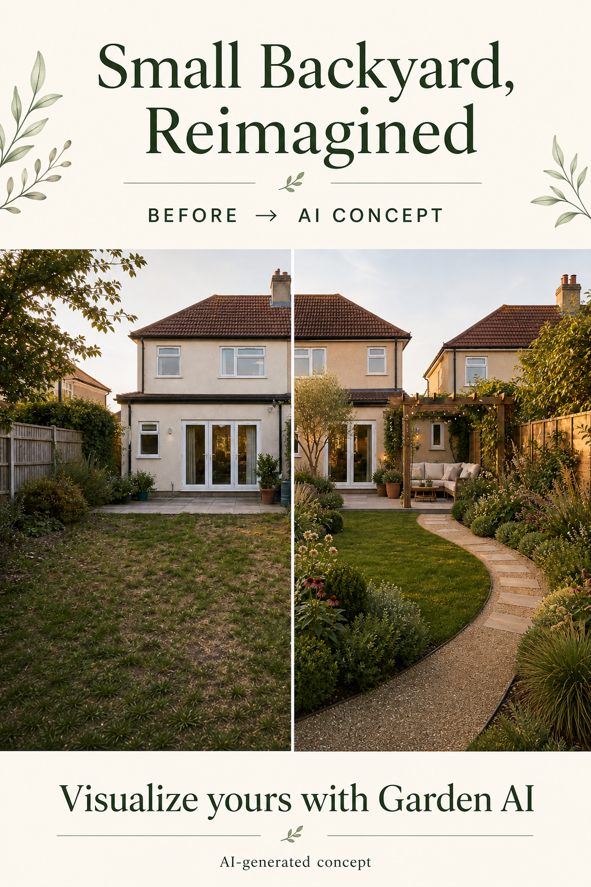

Choose one outdoor moment
Start with the thing the space should support: a quiet coffee, a shared dinner, planting, or play. Let that use earn the best spot in the yard.
When a small yard feels unfinished, the solution is rarely “add more.” A clearer path, one purposeful place to sit, and layered planting can make the same footprint feel considered.
The image below is an AI-generated concept for exploring direction—not a construction drawing.

Start with the thing the space should support: a quiet coffee, a shared dinner, planting, or play. Let that use earn the best spot in the yard.
A simple route from the door to the focal area can make a small space read as organised rather than cramped.
Mix a structural evergreen, softer middle-height planting, and a few seasonal accents. Adapt the plant list to your climate and light.
Use an AI concept to compare directions before paying for detailed plans or materials. Take notes on what you like—the path, the planting density, or the seating zone—then check drainage, sun exposure, access, and local requirements with an appropriate professional.
No. It is a concept for exploring style and layout. Site measurements, utilities, climate, drainage, permits, and materials all need real-world checks.
Stand far enough back to capture the house edge, main boundaries, and the ground. Daylight and a level camera angle make it easier to compare ideas.
Upload a photo to explore directions before the next decision.
AI-generated visualizations are concepts. Check local conditions and consult a qualified professional before construction or planting.